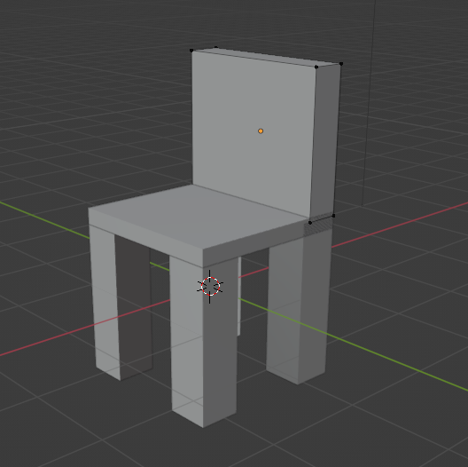
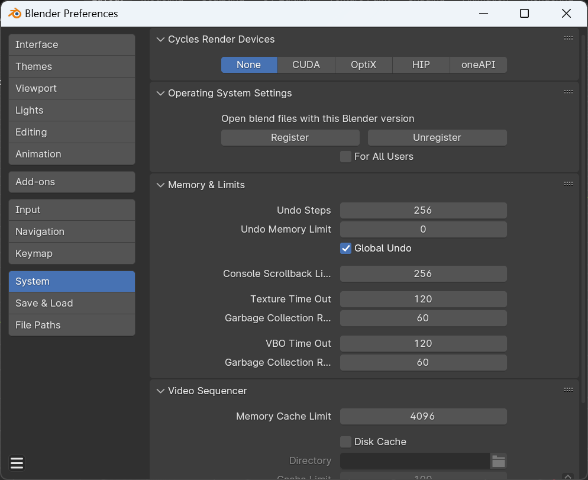
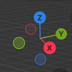
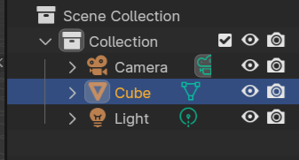
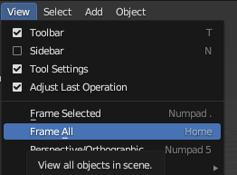
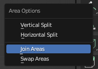
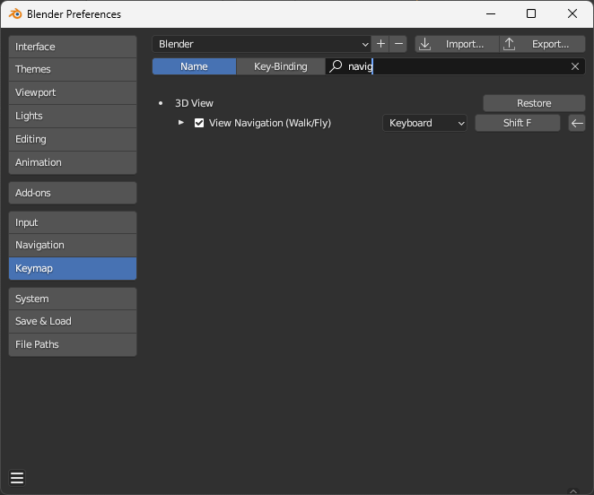
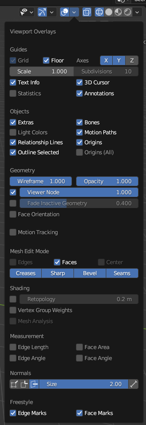
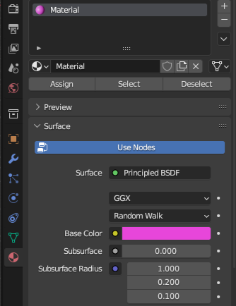

Blender-demo
Tuoli
Tehdään yhdessä tuoli Blenderillä
- Mesh-objektien lisääminen ja muokkaaminen
- Loop Cut
- Edit ja Object-mode

Sekalaisia ohjeita
Ympäristö
- Kannattaa asentaa viimeisin versio Blenderistä (nyt 4.1)
- Lähtökohta sovelluksella ollut animoinnissa ja tv-tuotannossa
Aloitus
- Aloitusnäkymästä kannattaa yleensä valita General (tai File / New / General).
- Aseta Undo Steps mahdollisimman suureksi (256) valitsemalla Edit / Preferences / System / Undo Steps

Liikkuminen
- Blenderin akseleissa Y on syvyysakseli, X ja Z horisontaalinen ja vertikaalinen (Unityssä Z syvyysakseli).
- Voit klikata kirjainta ja perspektiivi muuttuu

- Hiiren rulla pohjassa kääntäminen, shift+rulla panoroi, rulla zoomaa
- Jos eksyt niin valitse objekti Scene Collection / Collection / Cube ja tämän jälkeen View / Frame Selected (tai vaihtoehtoisesti View / Frame All)


Tiedosto
- tiedostomuoto .blend
- File / Save Incremental on hyvä vaihtoehto työstettäessä laajaa työtä, tallennusversio saa aina oman numeron.
- Link ja Append, suositus Append niin ei tee muutoksia toiseen blend-tiedostoon vaan tuo tähän projektiin.
- Kun viedään työ Unity:lle niin Export ja fbx-muoto.
Object Mode ja Edit Mode
- Edit Mode: valintavaihtoehdot Vertex, Edge ja Face
Muokkaaminen
Object Mode: siirrä 3d-kursori shift+hiiren oikea- S ja hiiren liikutus (Scale) muuttaa kokoa
- G-liikuttaa
- R-rotate, pyörittää objektia (hiiren vasen pysäyttää)
Edit Mode: Raahaamalla hiirella voit valita kaikki Vertex-pisteet (myös Ctrl+A)
Item / Transform-valikko (N) - View valikossa 3D-cursorin sijainti ja pyöritys
Uuden objektin lisääminen
- Add / Mesh / Cube
Liikuttaminen - Object mode, G-nappi (Ctrl-napilla snap to grid), hiiren vasemmalla asettaa
Edit Mode (Tab vaihtaa Edit/Object moden välillä) Valinta: A valitsee kaikki
Move-työkalu, jos haluat Ctrl-napilla pitää kiinni gridsissä.
G, liikuttaa, paina Z niin liikkuu vain Z-akselissa
- Alt+S palauttaa alkuperäinen koon
- Alt+G alkuperäinen sijainti
- Alt+R alkuperäinen rotaatio
Näkymän jakaminen:
- Ylävalikossa kun kursori muuttuu nuoleksi paina hiiren oikea, valitse Vertical split ja näytöltä kohta missä jaetaan näkymä.
- Takaisin poistaminen jälleen näkymien välissä hiiren oikea ja Join areas, valitse kumpi näkymä jyrää toisen.

Globalin vieressä Transform Pivot Point, yleensä Median point käytössä
Poista ja lisää face:
- Edit Mode, Valinta, X, remove Face
- Edit Mode, Valinta, F tekee uuden
VR/3D kävely objektissa
- Blender Preferences, Keymap, kirjoita navigation ja valitse View navigation, aseta pikanäpäin (Shift+F)

Normaalit
- Display Face Normals as Lines
- Edit Mode, oikealta Show Overlays ja Normals / Display Normals

- Mesh / Normals / Flip
Loop cut
- Edit Mode, Ctrl+R, valitaan leikkauskohta ja tämän jälkeen vielä säätö (jos keskeltä niin hiiren oikea nappi)
Modifiers
- Oikealla jakoavain, Add Modifier, valitse Generate / Mirror, tehdään tuolille puolet ja toinen tulee mirror-toiminnon kautta
- Uusi loop cut Ctrl+R, hiiren rullalla toinen valinta
- S ja X niin skaalataan X-akselin mukaan
Valitse Edit Mode, Face Select ja valitse jalkojen alareunat, tämän jälkeen E ja voit kasvattaa jalat.
Apply Scale
- Object Mode, Ctrl+A, Apply Scale hyväksyy muutokset
Measure-työkalu
- Ctrl-nappi pohjassa saa helposti mitattua objektien kokoa (x-napilla voi poistaa)
Värin vaihtaminen
- Material Properties ja valitse Base Color

- Jotta näet värin vaihda oikeasta yläkulmasta Viewport Shading.
- Lisätietoa: Youtube: How to Change the Color of an Object in Blender
Archimesh
- lisää uusi lisäosa (Blender Preferences, kirjoita archi)
- Add Mesh / Archimesh / Door, Object Mode ja uusi valikko Create josta voi säätää ominaisuuksia
- Lisää Room, lisää seiniä ja säädä kokoja
Boolean
- Generate / Boolean
- Difference, Object, pipetillä valinta, tämän jälkeen Apply-alasvetovalikosta
Knife-tool
- Knife-tool (K) pintojen siistimisessä, klikkaa Vertex, toinen Vertex ja Enter, kaikista pinnoista nelikulmaisia.
Ulkoiset lähteet
Skannaus PolyCam, LiDARPolyhaven: tekstuurit
- polyhaven.com
- File / Append blend-materiaali
- Valitse kohde, oikealla alareunassa punainen maapallo (Material), valitse materiaali ja tämän jälkeen z-napilla Material Preview.
- Materiaalit löytyvät Materials-kansiosta, huonekalut yms. mallit kansiosta Model.
SketchFab: ilmaisia malleja
- sketchfab.com
- Vaatii tunnukset, .glb-tiedostomuoto hyvä koska siinä mukana tekstuurit samassa tiedostossa.
BlenderKit
- blenderkit.com
- Lataa ja asenna lisäosa Blenderissä Blender Preferences, Add ons, Install